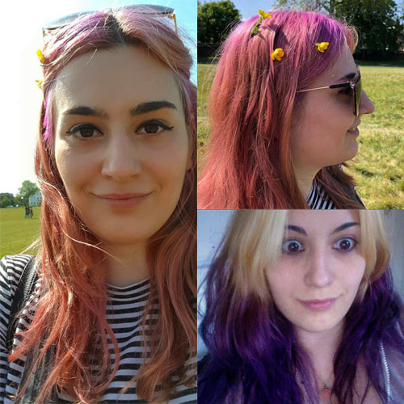

Milly Palmer
Welcome to my website!
My Photos & Illustrations
My Story
I grew up in the 90's in the Kentish countryside, just a short train to London,
where I used to go and explore the city, mostly catching the Northern Line tube to Camden Town
with my friends, exploring the market, gothic clothes, and tasty street food.
From the time I could walk my Mother put both my sister and I up for ballet lessons,
we danced on the local theatre stage in our colourful tutus, performing lots of ballet shows, and Sleeping Beauty that was filmed on VHS!
I'm a part of the millennial generation, that has lived through the fastest progression of technology in history. From playing Snake on my Nokia 3310
brick sized mobile phone to Playstation 2 gaming to smart phones that our now the center of our lives. I had lots of pet rabbits growing up that were
spoiled silly with vegetables and even had their own Bunny Castle that my Dad built and I painted. I was brought up vegetarian but when I was 13 years old,
I tried a chicken burger as my teenage rebellion and never looked back! I still feel guilty about eating animals that I think are cute though, I had duck in a
restaurant and then saw some adorable ducklings by a pond! I love drawing, baking creative cakes and getting inspired by music, films & fashion.
I always get goosebumps when I hear a song that speaks to my soul, I love being creative and immersing
myself around creative people and ideas.
Why Me?
During the first lockdown I was furloughed from my job, dyed my hair crazy colours and suddenly I had all this free
time to focus on something new. I started to learn coding influenced by friends talking about how rewarding it was as a career
and also from the excitement I felt from seeing so many coder characters pop up on my radar, most poignantly Lisbeth Salander
from The Girl With The Dragon Tattoo and Elliot Alderson from Mr Robot.
While I realise that these characters are hackers and
their natural talent and insane cinematic lives do not reflect a web developement career, it opened up my imagination to how
code is pieced together like a puzzle and also how reliant we are as a society on apps, websites and the internet and how interesting
it would be to be a contributor. What I love about coding is the endless possibilities that you can create and the network of people that are
virtually at your fingertips all helping and supporting each other. I've already learnt so much from FreeCodeCamp, Udemy and Codecademy but to be a
part of an intricate group of people all learning similar projects and working through them together would be amazingly rewarding and life changing.
I'm applying for this apprenticeship to pursue my ambition of becoming a Web Developer and learn from and teach others with pair programming.
Founders and Coders
What I like about Founders and Coders is the welcoming coding community that they provide and the supportive atmosphere to show an attempt of a code algorithm,
however tangled it may be. While coding is becoming more of a competitive career path every year, they assure everyone that no question is silly to ask,
they're encouraged, as I've always found that learning is more fun with other people, and also the satisfaction of seeing what you're learning working. Coding is also
a whole world of specific languages with unique purposes and careers. The difference between Javascript language and French though, is the logical thought process of how we
give a computer instructions to make projects and websites.
Learning has always thrived better in a group, especially to get another
person's perspective on how you might've simply missed a semi-colon and that's why you couldn't get
your code to work! Founders and Coders also ask their current cohort members to mentor new applicants which is an innovative
system, as people learn to code they pass on their knowledge.
Illustration
I studied Illustration at Solent University in Southampton, where I had great tutors that encouraged me to
experiment with new artistic mediums, I tried a mix of letter press, inks, pastels and paper cuts for my Final Major Project,
illustrating Chuck Palahniuk's Novel, Invisible Monsters. He's the author of Fight Club, his most famous book turned David Fincher
film masterpiece of self destruction and anarchy.
Brave New World was my favourite book to illustrate from as it's about a society that manufactures people into a rank of categories and psychological control.
My tutor suggested that I visit The Hunterian Musuem, in Central London, full of preserved medical specimens from humans and animals. I get inspiration for my
artwork from nature, music, films, stories, fashion, psychology, nightmares and dreams.
I have always been an artist, whether I'm doing baking, singing, dancing ballet, drawing or web design, I could spend hours styling my CSS like a painting,
but there's only so many hours in the day!